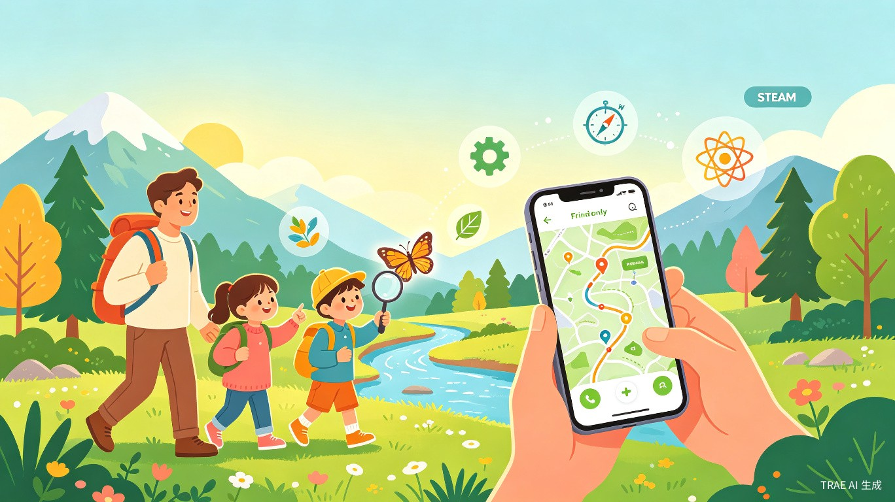
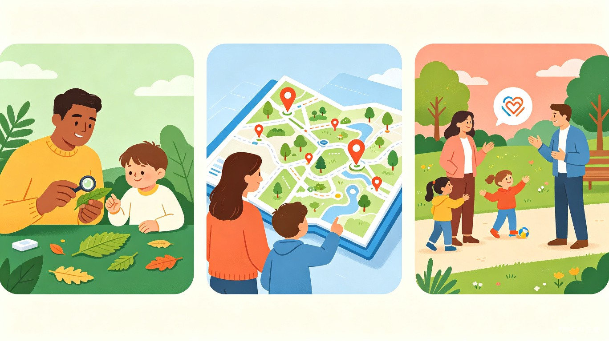

WildKidGo · 让世界成为孩子的课堂
一款融合 STEAM 教育、旅行攻略与家庭社交的亲子户外纯软件 App,让孩子在玩中学、学中玩。

01 · 创意名称 + 创意介绍
创意名称
WildKidGo(野孩子GO) —— 一款「亲子户外 + STEAM 玩学」一体化的纯软件 App,通过 AI 行程规划、手机摄像头 AR 识物、任务化探索与家庭社群,把每一次出门都变成一次系统化成长冒险。
想解决什么问题
当代家长普遍焦虑:「带孩子出去玩」很难变成「带孩子真正学到东西」。市面上要么是纯旅行攻略,要么是室内 STEAM 课程,几乎没有把「户外场景 + 学习任务 + 同龄社交」结合起来的产品。家长不会规划、孩子缺少同伴、过程缺乏教育沉淀——是亲子出行的核心痛点。
为什么会想到做这个
灵感来自一次真实的周末出行:父母带孩子去山里徒步,孩子捡了几片叶子、看了一只甲虫,回家就忘了。如果当时有一款 App 能引导孩子完成「叶片分类小任务」「水流速度小实验」,并把过程做成可分享的探索日志,这次出行的价值至少会翻三倍。大自然本来就是最好的 STEAM 实验室,只是缺一座桥。
大概是什么产品
一款 iOS / Android 双端原生 App(纯软件,无任何硬件依赖):用手机自带的摄像头、GPS、陀螺仪即可完成 AR 识物、轨迹记录、任务打卡。核心是「AI 行程规划 → 户外玩学任务 → AR 识物答题 → 探索手册沉淀 → 家庭社群分享」的完整软件闭环,下载即用、零门槛。
02 · 目标用户及痛点
面向哪些用户
核心用户
3–12 岁孩子的城市中产家庭,家长年龄 28–45 岁,重视素质教育,每月至少 1–2 次家庭出行需求。
延伸用户
祖辈带娃家庭、单亲家庭、对自然教育与户外课感兴趣的早教/小学机构、公益自然导赏组织。
在什么场景下使用
- 周末半日游:城市周边公园、湿地、博物馆、植物园
- 节假日 2–3 天短途:山野徒步、海岸线、农场、营地
- 长假深度游:跨城市自然研学、国家公园、地质科普路线
- 放学后日常:小区/校园周边 1 小时「微探索」任务
当前痛点(没有本产品时)
| 痛点维度 | 家长的真实困扰 | 孩子的真实困扰 |
|---|---|---|
| 去哪儿玩 | 攻略碎片化,不知道哪个目的地真的适合孩子年龄段 | 每次都被带去差不多的地方,没有新鲜感 |
| 玩什么 | 到了现场不知道怎么引导,只能让娃自己跑 | 不知道一片叶子、一块石头背后有什么故事 |
| 学什么 | 担心「白玩了」,但又没精力自己设计学习任务 | 课堂式学习枯燥,户外又没有系统输入 |
| 和谁玩 | 独生子女缺玩伴,陌生家庭社交门槛高 | 路上很孤单,渴望和同龄伙伴一起冒险 |
| 安全保障 | 孩子在户外乱跑,担心走失,缺少便捷的家庭定位与电子围栏工具 | — |
03 · 价值与意义

① 教育价值(社会价值角度)
WildKidGo 把国家课标 STEAM 知识点拆解为 500+ 户外任务卡,覆盖科学观察、工程搭建、艺术写生、数学测量等维度。在玩耍中完成知识沉淀,弥补城市孩子「自然缺失症」,推动素质教育从课堂走向真实世界。每完成一次任务,孩子可生成专属探索手册——这是最有温度的成长档案。
② 效率提升价值(给家长的)
家长从「攻略小白」变成「带娃高手」: 一键生成「目的地 + 路线 + 任务 + 装备清单 + 同行家庭」组合方案,平均规划时间从 3 小时压缩到 5 分钟。出行后自动生成成长报告,免去手工记录烦恼。
③ 商业与社会价值
商业上,通过「订阅会员 + 自然营地分销 + 装备电商 + B 端公益合作」四轮驱动变现;社会层面,联合保护区与公益组织推出「公民科学家」任务(蝴蝶普查、河流水质监测、城市鸟类记录),让孩子从小成为生态保护参与者——这也是我们选择附加「社会公益」标签的原因。
04 · 一句话总结
WildKidGo 想做的,是把「广阔的户外」装进一台手机,把「正确的引导」放进每个家庭的口袋—— 让每一次出门,都成为一次孩子主动想要的成长冒险。